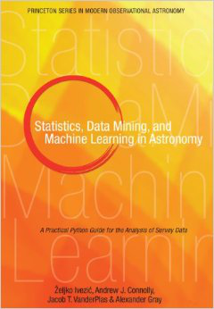

1. Introduction¶
1.1. Philosophy¶
astroML is a Python module built within the framework of Python’s Scipy ecosystem, designed as a repository for fast and well-tested code for the analysis of astronomical data. It is envisioned to be a community resource, with the development and submission of new algorithms, data sets, and examples provided by GitHub’s collaborative coding interface.
astroML is designed to be a resource for both researchers and students of astronomy and Python. Rather than focusing on re-developing fast algorithms, astroML makes use of the large collection of well-tested routines available in numpy, scipy, scikit-learn, matplotlib, and other packages.
astroML strives to bring the astronomical community closer to the ideals of Reproducible Research, in which research papers are accompanied by well-written code to duplicate, check, and extend the results.
1.2. Textbook¶
The astroML package is used to create all of the examples and figures in the book Statistics, Data Mining, and Machine Learning in Astronomy, by Zeljko Ivezic, Andrew Connolly, Jacob Vanderplas, and Alex Gray, published by Princeton University Press (view on Amazon). These figures can be seen in the Textbook Figures section, along with the full Python scripts used to generate them.
The text contains detailed theoretical background of many of the tools and methods available in astroML, and also many of the tools available in scikit-learn which are used in the examples here. The on-line documentation at this site is growing, but we recommend refering to the text for more details.